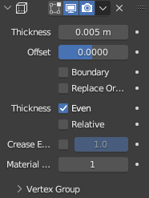

You will need:
- Blender (FREE)
- A computer (NOT FREE)
1. Create a "General" Blender project. Delete everything inside of it and add a Plane. It will now be referred to as Floor.
2. Keep Floor selected, press S again, press Shift+Z and then press 8.
- Shift+Z locks Scale mode to the axis that aren't Z (X and Y).
3. Enter Edit Mode by either holding Tab and moving the mouse towards it, or selecting Edit Mode in the top left where Object Mode is.
4. Ensure all dots are in Orange (if not, press A) and right click, select Subdivide. In the bottom left corner there should now be a subdivide tab, open it.
5. Set the Number of Cuts to 30.
Want to have rocky hills at the edges of your render? SKIP TO ROCKY HILLS!
From now, the guide will feature rocky hills in future images.
6. Go back to Object Mode. Add an Empty > Plain Axes to the scene. Set it's position to one of the edges using 8 or -8 on X or Y.
7. Select the Floor again and add a Mirror modifier in the Modifiers tab.
8. Set the options how they are in the image above.
- If Axis X doesn't work for you, try Y!
9. Add an Array modifier now. Set the count to something like 10.
- This will let you seamlessly loop the animation.
10. Now we start designing. Set the Viewport Shading to Material in the top right.
11. Select Floor and go to the Shading tab at the top.
12. At the bottom, ensure that "Material" is selected and delete the Principled BSDF. This will make it pitch black.
13. Create a new material, delete the principled BSDF and add an Emission Node. Set the colour to whatever you like and link it to Material Output. Set emission strength to something like 50.
14. Go back and select Floor, go to modifiers and add a Wireframe. Set the thickness to 0.005 or smaller, disable "Replace Original Geometry" and set the Material Offset to 1.
15. Go to Render Properties tab (The little camera icon) and enable Bloom.
16. Add a UV Sphere Mesh. Right-Click and Shade Smooth. Move this to the very end of your road.
17. Add a new material. Use this node setup in the Shading tab, set the colours to what you would like.
18. Add a camera to the scene and place it at 8 or -8 on the X or Y axis. Set its rotations as follows:
- X: 90, Y: 0, Z: 90 or -90.
- Drag the camera up a little bit out of the ground. X can be slightly higher, such as 93.
19. The animation tab should be at the bottom, squished. Drag it up, and set "End" to 120.
20. Go to frame 1 and click the diamond next to whichever position value you set to 8 or -8.
21. Click frame 121 (It will be out of the animation scope, don't worry!) and set the Camera position from 8/-8 to 24/-24. Press the diamond again.
22. Select the Sun, then select the Camera. Press Ctrl+P and select Object.
- The Sun will now move with the camera to ensure it does not appear getting closer.
23. Preview the animation to make sure it loops.
24. Render the animation in the Render tab! It may take a WHILE.
- To render as a video, go to Output Properties and change PNG to FFMPEG Video, then open the Encoding tab and select MPEG-4.
Adding Rocky Edges
This section is not required, but can improve the aesthetic of your render.
A-1. Press the circle in the toolbar at the top to make it blue. Press Alt+O.
A-2. Select vertices close to the edge, but not completely off the edge.

A-3. Using the move tool, drag the points upwards. While holding the blue arrow, use the scroll wheel to set how much will be affected by the transform.
- This tool is called Proportional Editing. It allows you to move vertices and affect the others surrounding it to make a smoother transform.